RMarkdown:
reproducible reporting
Tom Mock, PhD • RStudio
2022-04-26
github.com/jthomasmock/rmd-nhs/
jthomasmock.github.io/rmd-nhs/index.html
Slides released under CC-BY 2.0 ]
Resources
Workshop materials: on Github
Slides: jthomasmock.github.io/rmd-nhs/
Some content adapted from superstar Dr. Alison Hill CDC & R4Pharma: CC-BY
What is R Markdown?
What is R Markdown?
Magic (🧙️)
Why RMarkdown?
- Reproducibility
Why RMarkdown?
Reproducibility
Re-usability
Why RMarkdown?
Reproducibility
Re-usability
Extensibility
Why RMarkdown?
Reproducibility
Re-usability
Extensibility
"Lazy" ability
Change your mental model
Source <-> Output

Change your mental model
Source <-> Output
Source -> Output

R Markdown
R Markdown documents are fully reproducible. Use a productive notebook interface to weave together narrative text and code to produce elegantly formatted output. Use multiple languages including R, Python, and SQL.
R Markdown
R Markdown documents are fully reproducible. Use a productive notebook interface to weave together narrative text and code to produce elegantly formatted output. Use multiple languages including R, Python, and SQL.
No more copy-paste, no more manually rebuilding analyses from disparate components, no more dread when the data is updated and you need to run an analysis.
Ease of Use VS Full Details
Pouring milk
A straight-forward task - pour the boxed milk into the glass.
Pouring milk
A straight-forward task - pour the boxed milk into the glass.
Easy to use
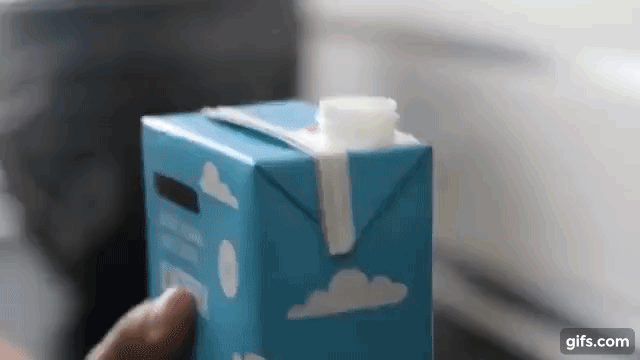
Pouring milk
A straight-forward task - pour the boxed milk into the glass.
Easy to use
Understanding the Full details

Many RMarkdown Formats
| Documents | |
| Notebook | Interactive R Notebooks |
| HTML | HTML document w/ Bootstrap CSS |
| PDF document (via LaTeX template) | |
| Word | Microsoft Word document (docx) |
| ODT | OpenDocument Text document |
| RTF | Rich Text Format document |
| Markdown | Markdown document (various flavors) |
| Presentations | |
| ioslides | HTML presentation with ioslides |
| reveal.js | HTML presentation with reveal.js |
| Slidy | HTML presentation with W3C Slidy |
| Beamer | PDF presentation with LaTeX Beamer |
| PowerPoint | PowerPoint presentation |
Many RMarkdown Formats
| Documents | |
| Notebook | Interactive R Notebooks |
| HTML | HTML document w/ Bootstrap CSS |
| PDF document (via LaTeX template) | |
| Word | Microsoft Word document (docx) |
| ODT | OpenDocument Text document |
| RTF | Rich Text Format document |
| Markdown | Markdown document (various flavors) |
| Presentations | |
| ioslides | HTML presentation with ioslides |
| reveal.js | HTML presentation with reveal.js |
| Slidy | HTML presentation with W3C Slidy |
| Beamer | PDF presentation with LaTeX Beamer |
| PowerPoint | PowerPoint presentation |
| Journals | |
| distill | Scientific and technical writing for the web |
| jss_article | Journal of Statistical Software (JSS) |
| acm_article | Association for Computing Machinery (ACM) |
| acs_article | American Chemical Society (ACS) Journal |
| ctex | Documents based on the LaTeX package ctex |
| elsevier_article | Submissions to Elsevier journals |
| More | |
| flexdashboard | Interactive dashboards |
| bookdown | HTML, PDF, ePub, and Kindle books |
| Websites | Multi-page websites |
| blogdown | Customizable websites and blogs |
| pkgdown | Package documentation websites |
| Tufte Handout | Handouts in the style of Edward Tufte |
| Package Vignette | R package vignette (HTML) |
| Github Document | GitHub Flavored Markdown document. |
Anatomy of RMarkdown
- Metadata (YAML)
---output: html_document---Anatomy of RMarkdown
- Metadata (YAML)
---output: html_document---- Code
```{r basicExample, echo = TRUE}library(dplyr)mtcars %>% group_by(cyl) %>% summarize(n = n(), mean = mean(mpg))```Anatomy of RMarkdown
- Metadata (YAML)
---output: html_document---- Code
```{r basicExample, echo = TRUE}library(dplyr)mtcars %>% group_by(cyl) %>% summarize(n = n(), mean = mean(mpg))```- Text
# Heading 1This is a sentence with some **bold text**, some *italic text* and an [image](image.png).Metadata: YAML
The YAML metadata or header is:
processed in many stages of the rendering process and can influence the final document in many different ways. It is placed at the very beginning of the document and is read by each of Pandoc, rmarkdown, and knitr. Along the way, the information that it contains can affect the code, content, and the rendering process. - RMarkdown Cookbook
Metadata: YAML
The YAML metadata or header is:
processed in many stages of the rendering process and can influence the final document in many different ways. It is placed at the very beginning of the document and is read by each of Pandoc, rmarkdown, and knitr. Along the way, the information that it contains can affect the code, content, and the rendering process. - RMarkdown Cookbook
A generic YAML follows a pattern like the below:
---key: value---Valid YAML requires 3 dashes --- on either end, creating the YAML block, with key + value pairs assigned throughout.
Metadata: YAML
Specific metadata about the document and rendering options are included in this YAML header.
Note that if you want to find out what type of options are available, you can run ?rmarkdown::html_document() or ?rmarkdown::pdf_document(), etc, to show the specific rendering options for that specific output format. There is also a rmarkdown pkgdown site, so you can explore specific options there as well.
Output options
---output: html_document---
Specify output options in YAML
---title: My First RMarkdown Reportauthor: Tom Mockoutput: html_document---Specify output options in YAML
---title: My First RMarkdown Reportauthor: Tom Mockoutput: html_document------title: My First RMarkdown Reportauthor: Tom Mockoutput: html_document: toc: true toc_float: true theme: united code_download: true---Specify output options in YAML
---title: My First RMarkdown Reportauthor: Tom Mockoutput: html_document------title: My First RMarkdown Reportauthor: Tom Mockoutput: html_document: toc: true toc_float: true theme: united code_download: true------title: My PDF RMarkdown Reportauthor: Tom Mockoutput: pdf_document---Specify output options in YAML
---title: My First RMarkdown Reportauthor: Tom Mockoutput: html_document------title: My First RMarkdown Reportauthor: Tom Mockoutput: html_document: toc: true toc_float: true theme: united code_download: true------title: My PDF RMarkdown Reportauthor: Tom Mockoutput: pdf_document------title: "My Presentation"subtitle: "made with xaringan"author: "Yihui Xie"date: "2021-10-30"output: xaringan---Text
Text and Markdown text
Text is human language
Markdown is markup language
Text and Markdown text
Text is human language
Markdown is markup language
* _Text_ is **human language** * _Markdown_ is **markup language**Text and Markdown text
Text is human language
Markdown is markup language
* _Text_ is **human language** * _Markdown_ is **markup language**You can read all about Markdown via the Markdown guide or use the rmarkdown cheat sheet!
Headings for splitting up your document
# Header 1## Header 2### Header 3#### Header 4Headings for splitting up your document
# Header 1## Header 2### Header 3#### Header 4Header 1
Header 2
Header 3
Header 4
Headings for splitting up your document
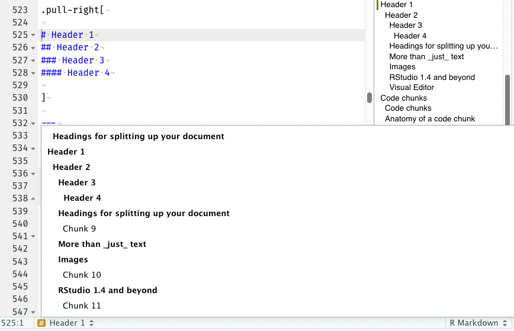
More than just text
You can inline R code, so that you can programatically generate specific components of the document.
More than just text
You can inline R code, so that you can programatically generate specific components of the document.
IE I can report that there are r nrow(mtcars)
More than just text
You can inline R code, so that you can programatically generate specific components of the document.
IE I can report that there are r nrow(mtcars)
Which returns 32.
More than just text
You can inline R code, so that you can programatically generate specific components of the document.
IE I can report that there are r nrow(mtcars)
Which returns 32.
These inline texts can be as complex or simple as you like, and can also return R objects.
car_rows <- glue::glue("There are {nrow(mtcars)} rows in the `mtcars` dataset.")More than just text
You can inline R code, so that you can programatically generate specific components of the document.
IE I can report that there are r nrow(mtcars)
Which returns 32.
These inline texts can be as complex or simple as you like, and can also return R objects.
car_rows <- glue::glue("There are {nrow(mtcars)} rows in the `mtcars` dataset.")r car_rows
More than just text
You can inline R code, so that you can programatically generate specific components of the document.
IE I can report that there are r nrow(mtcars)
Which returns 32.
These inline texts can be as complex or simple as you like, and can also return R objects.
car_rows <- glue::glue("There are {nrow(mtcars)} rows in the `mtcars` dataset.")r car_rows
There are 32 rows in the mtcars dataset.
More than just text
Indeed, parents whose children are vaccinated no longer have to worry about their child's death or disability from:- whooping cough, - polio, - diphtheria, - hepatitis, or - a host of other infections.Vaccines are the most cost-effective health care interventions there are. We have three new, extremely effective vaccines to roll out in developing countries: 1. pneumonia1. rotavirus1. meningitis AMore than just text
Indeed, parents whose children are vaccinated no longer have to worry about their child's death or disability from:- whooping cough, - polio, - diphtheria, - hepatitis, or - a host of other infections.Vaccines are the most cost-effective health care interventions there are. We have three new, extremely effective vaccines to roll out in developing countries: 1. pneumonia1. rotavirus1. meningitis AIndeed, parents whose children are
vaccinated no longer have to worry about
their child's death or disability from:
- whooping cough,
- polio,
- diphtheria,
- hepatitis, or
- a host of other infections.
Vaccines are the most cost-effective health
care interventions there are. We have
three new, extremely effective vaccines to
roll out in developing countries:
- pneumonia
- rotavirus
- meningitis A
Images

Images

knitr::include_graphics("https://user-images.githubusercontent.com/163582/45438104-ea200600-b67b-11e8-80fa-d9f2a99a03b0.png")
RStudio 1.4 and beyond
RStudio v1.4 (and future versions) include a visual markdown editing mode. Write code, text, and markdown. See the results in real time!
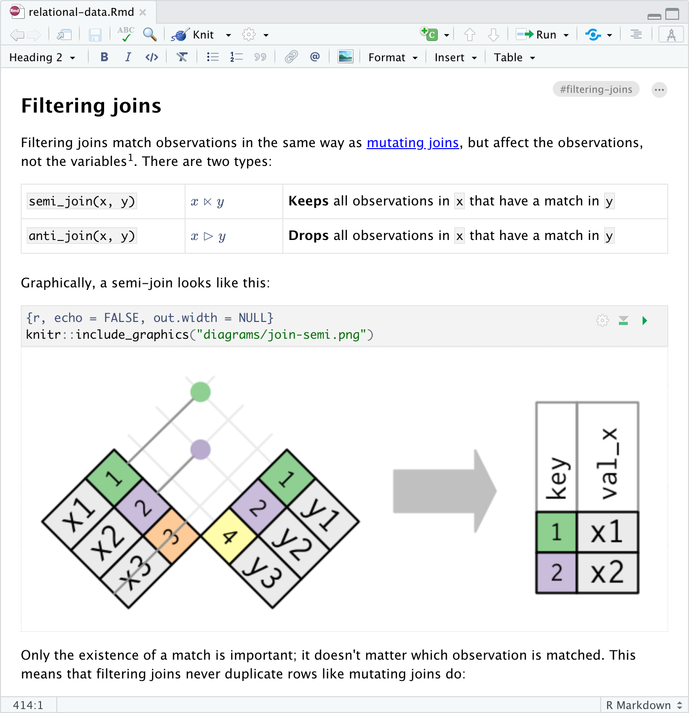
Visual Editor
- The visual editor is more than just the ability to see the output in real time.
- It also provides "word processor" like formatting of text, math, and other capabilities!
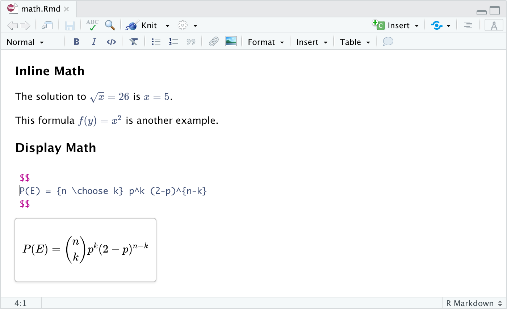
Code chunks
Code chunks
Specified sections of the document that are used to evaluate code and optionally return outputs.
```{r, echo = FALSE}mtcars %>% distinct(cyl)```Code chunks
Specified sections of the document that are used to evaluate code and optionally return outputs.
```{r, echo = FALSE}mtcars %>% distinct(cyl)```mtcars %>% distinct(cyl)## cyl## Mazda RX4 6## Datsun 710 4## Hornet Sportabout 8Anatomy of a code chunk
```{r car-stuff, echo = FALSE}mtcars %>% distinct(cyl)```Anatomy of a code chunk
```{r car-stuff, echo = FALSE}mtcars %>% distinct(cyl)```- Has 3x backticks on each end
``` - Place engine (
rand chunk labellabel) between curly braces{r label} - Place options behind the label, after a comma:
{r label, option1=value}
Code chunks
Code in a chunk auto print, unless saved to an object, which needs to be explicitly returned.
n_manufacturers <- n_distinct(gt::gtcars$mfr)Code chunks
Code in a chunk auto print, unless saved to an object, which needs to be explicitly returned.
n_manufacturers <- n_distinct(gt::gtcars$mfr)n_manufacturers## [1] 19Code chunks
Code in a chunk auto print, unless saved to an object, which needs to be explicitly returned.
n_manufacturers <- n_distinct(gt::gtcars$mfr)n_manufacturers## [1] 19n_manufacturers <- n_distinct(gt::gtcars$mfr)n_manufacturers## [1] 19Code chunks return more than just data
car_data <- gt::gtcars %>% filter(!is.na(mpg_h)) %>% group_by(mfr) %>% summarise( mean_mpg = mean(mpg_h), n_models = n_distinct(model) ) %>% filter(n_models >= 2) %>% arrange(desc(n_models))ggplot(car_data, aes(x = mean_mpg, y = fct_reorder(mfr, mean_mpg))) + geom_col()Code chunks return more than just data
car_data <- gt::gtcars %>% filter(!is.na(mpg_h)) %>% group_by(mfr) %>% summarise( mean_mpg = mean(mpg_h), n_models = n_distinct(model) ) %>% filter(n_models >= 2) %>% arrange(desc(n_models))ggplot(car_data, aes(x = mean_mpg, y = fct_reorder(mfr, mean_mpg))) + geom_col()ggplot(car_data, aes(x = mean_mpg, y = fct_reorder(mfr, mean_mpg))) + geom_col()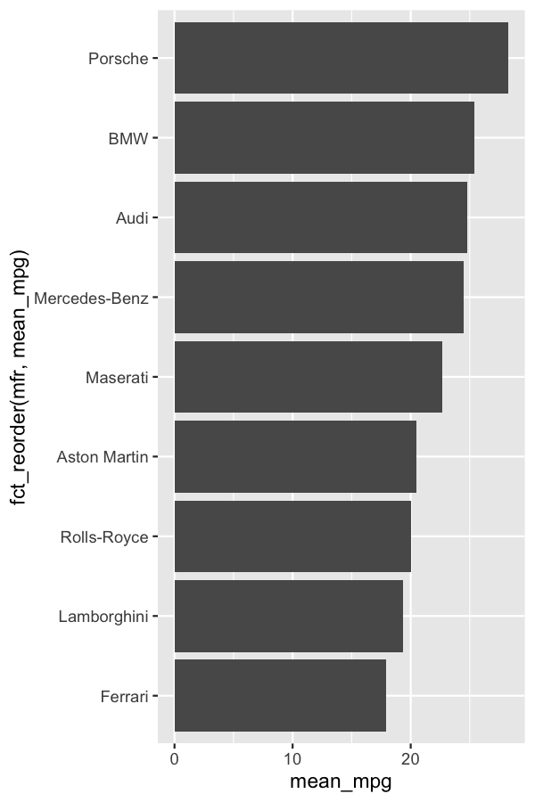
Code chunks return more than just data
car_data %>% gt::gt()| mfr | mean_mpg | n_models |
|---|---|---|
| Ferrari | 17.88889 | 9 |
| Audi | 24.80000 | 5 |
| BMW | 25.40000 | 5 |
| Aston Martin | 20.50000 | 4 |
| Porsche | 28.25000 | 4 |
| Lamborghini | 19.33333 | 3 |
| Maserati | 22.66667 | 3 |
| Mercedes-Benz | 24.50000 | 2 |
| Rolls-Royce | 20.00000 | 2 |
Code chunks are controllable
There are many chunk options you can control via knitr (the package that provides core features of RMarkdown).
Link to all the knitr options
Code chunks are controllable
There are many chunk options you can control via knitr (the package that provides core features of RMarkdown).
Link to all the knitr options
```{r, eval = FALSE}mtcars %>% distinct(cyl)```Code chunks are controllable
There are many chunk options you can control via knitr (the package that provides core features of RMarkdown).
Link to all the knitr options
```{r, eval = FALSE}mtcars %>% distinct(cyl)```# This won't return, because the # chunk is not evaluated# via eval = FALSEmtcars %>% distinct(cyl)Code chunks are controllable
Some examples
| Option | Description |
|---|---|
fig.dim = c(4,6) |
Plots generated from this chunk will have a width of 4 and height of 6. |
dpi = 150 |
Plots generated will have a dots per inch (pixel density) of 150 |
echo = FALSE |
Code will not be echoed (ie not shown) |
eval = FALSE |
Nothing will be evaluated, but could still be printed |
cache = TRUE |
Results will be cached, and chunk will not be run in subsequent renders, unless code is changed. |
message = FALSE |
No messages will be printed |
warning = FALSE |
No warnings will be printed |
include = FALSE |
No ouputs/echo/messages/etc will be returned |
Code chunks are controllable
```{r, fig.dim = c(6,4), dpi=150}mtcars %>% count(cyl) %>% ggplot(aes(x = n, y = factor(cyl))) + geom_col()```Code chunks are controllable
```{r, fig.dim = c(6,4), dpi=150}mtcars %>% count(cyl) %>% ggplot(aes(x = n, y = factor(cyl))) + geom_col()```New to knitr v1.35, there's now support for in-chunk option setting via special chunk option comments (ie #|). Very useful for longer options (like fig.cap or fig.alt), for setting many chunks at once, or for logical statements.
```{r}#| fig.dim = c(6,4), dpi = 150,#| fig.alt = "A simple barplot with the count of observations on the x-axis by the number of cylinders on the y-axis. There are 14 eight-cylinder cars, 7 six-cylinder cars, and 11 four-cylinder cars.\n```Code chunks are controllable
Default plot, too big and "fuzzy"
mtcars %>% count(cyl) %>% ggplot(aes(x = n, y = factor(cyl))) + geom_col()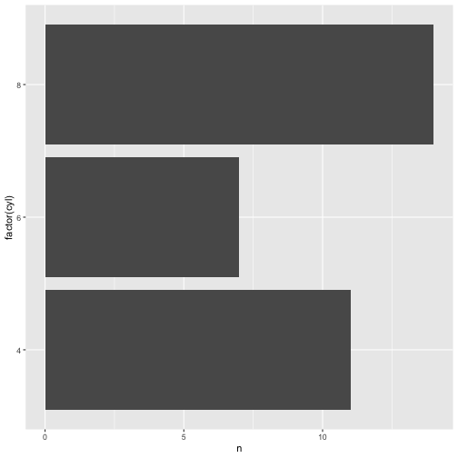
Code chunks are controllable
Default plot, too big and "fuzzy"
mtcars %>% count(cyl) %>% ggplot(aes(x = n, y = factor(cyl))) + geom_col()opts set: fig.dim = c(6,4) and dpi=150
mtcars %>% count(cyl) %>% ggplot(aes(x = n, y = factor(cyl))) + geom_col()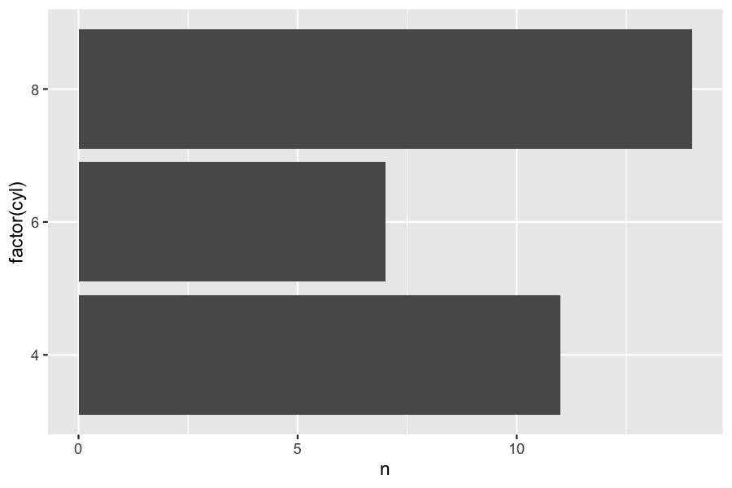
Chunk options can be globally set
```{r setup, include = FALSE}knitr::opts_chunk$set( echo = FALSE, fig.width = 6, dpi = 150)```Chunk options can be globally set
```{r setup, include = FALSE}knitr::opts_chunk$set( echo = FALSE, fig.width = 6, dpi = 150)```This is typically most useful in avoiding repeating yourself throughout a document and making the different components consistent between chunks without having to manually set these for EACH chunk.
Chunk option defaults
str(knitr::opts_chunk$get()[1:27])## List of 27## $ eval : logi TRUE## $ echo : logi TRUE## $ results : chr "markup"## $ tidy : logi FALSE## $ tidy.opts : NULL## $ collapse : logi FALSE## $ prompt : logi FALSE## $ comment : chr "##"## $ highlight : logi TRUE## $ size : chr "normalsize"## $ background : chr "#F7F7F7"## $ strip.white : 'AsIs' logi TRUE## $ cache : logi FALSE## $ cache.path : chr "index_cache/html/"## $ cache.vars : NULL## $ cache.lazy : logi TRUE## $ dependson : NULL## $ autodep : logi FALSE## $ cache.rebuild: logi FALSE## $ fig.keep : chr "high"## $ fig.show : chr "asis"## $ fig.align : chr "default"## $ fig.path : chr "index_files/figure-html/"## $ dev : chr "png"## $ dev.args : NULL## $ dpi : num 72## $ fig.ext : NULLChunk option defaults
str(knitr::opts_chunk$get()[1:27])## List of 27## $ eval : logi TRUE## $ echo : logi TRUE## $ results : chr "markup"## $ tidy : logi FALSE## $ tidy.opts : NULL## $ collapse : logi FALSE## $ prompt : logi FALSE## $ comment : chr "##"## $ highlight : logi TRUE## $ size : chr "normalsize"## $ background : chr "#F7F7F7"## $ strip.white : 'AsIs' logi TRUE## $ cache : logi FALSE## $ cache.path : chr "index_cache/html/"## $ cache.vars : NULL## $ cache.lazy : logi TRUE## $ dependson : NULL## $ autodep : logi FALSE## $ cache.rebuild: logi FALSE## $ fig.keep : chr "high"## $ fig.show : chr "asis"## $ fig.align : chr "default"## $ fig.path : chr "index_files/figure-html/"## $ dev : chr "png"## $ dev.args : NULL## $ dpi : num 72## $ fig.ext : NULLstr(knitr::opts_chunk$get()[28:53])## List of 26## $ fig.width : num 7## $ fig.height: num 7## $ fig.env : chr "figure"## $ fig.cap : NULL## $ fig.scap : NULL## $ fig.lp : chr "fig:"## $ fig.subcap: NULL## $ fig.pos : chr ""## $ out.width : NULL## $ out.height: NULL## $ out.extra : NULL## $ fig.retina: num 1## $ external : logi TRUE## $ sanitize : logi FALSE## $ interval : num 1## $ aniopts : chr "controls,loop"## $ warning : logi TRUE## $ error : logi FALSE## $ message : logi TRUE## $ render : NULL## $ ref.label : NULL## $ child : NULL## $ engine : chr "R"## $ split : logi FALSE## $ include : logi TRUE## $ purl : logi TRUEChunks can be named
- Useful for managing your longer documents (RStudio outline)
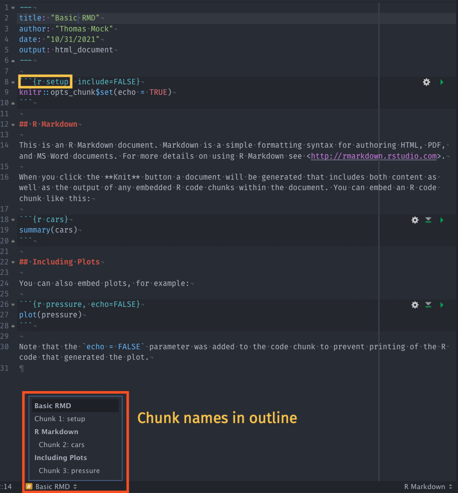
Chunks can be named
- Useful for managing your longer documents (RStudio outline)
- Useful for troubleshooting (ie where is the document failing on render)
label: unnamed-chunk-23 |..............................| 83% ordinary text without R code |..............................| 85%label: unnamed-chunk-24 (with options) List of 2 $ fig.dim: num [1:2] 6 4 $ dpi : num 150 |..............................| 86% ordinary text without R codeNamed chunks can be re-used!
```{r myPlt, eval = FALSE}ggplot(mtcars, aes(x = disp, y = mpg, color = factor(cyl))) + geom_point()```Note that you when using named chunks you can't alter the internal code, only the chunk options. This is necessary because you are referencing the initially defined code in that chunk.
Named chunks can be re-used!
```{r myPlt, eval = FALSE}ggplot(mtcars, aes(x = disp, y = mpg, color = factor(cyl))) + geom_point()```Note that you when using named chunks you can't alter the internal code, only the chunk options. This is necessary because you are referencing the initially defined code in that chunk.
```{r myPlt, dpi=300,fig.dim=c(6,4)}```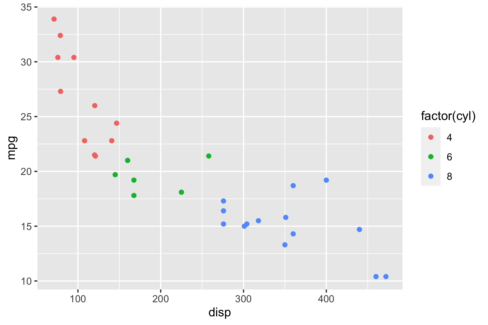
Chunk names, good and bad
Good
chunkmyChunkmy-chunkmychunk1
Chunk names, good and bad
Good
chunkmyChunkmy-chunkmychunk1
Bad
(These will fail)
my_chunkmy chunk
The setup chunk
```{r setup, include=FALSE}knitr::opts_chunk$set( collapse = TRUE, comment = "#>", out.width = "100%" )```The setup chunk
```{r setup, include=FALSE}knitr::opts_chunk$set( collapse = TRUE, comment = "#>", out.width = "100%" )```- A special chunk label:
setup - Typically the first chunk
- All following chunks will use these options (i.e., sets global chunk options)
- Tip: set
include=FALSE - You can (and should) use individual chunk options too
Chunks don't have to be R
```{python}x = 42 * 2print(x) ``````{bash}echo "Hello Bash!"cat flights1.csv flights2.csv > flights.csv```Chunks don't have to be R
```{python}x = 42 * 2print(x) ``````{bash}echo "Hello Bash!"cat flights1.csv flights2.csv > flights.csv``````{r}library(DBI)db = dbConnect(RSQLite::SQLite(), dbname = "sql.sqlite")``````{sql, connection=db}SELECT * FROM trials```Chunk language engines
names(knitr::knit_engines$get())## [1] "awk" "bash" "coffee" "gawk" "groovy" "haskell" ## [7] "lein" "mysql" "node" "octave" "perl" "psql" ## [13] "Rscript" "ruby" "sas" "scala" "sed" "sh" ## [19] "stata" "zsh" "asis" "asy" "block" "block2" ## [25] "bslib" "c" "cat" "cc" "comment" "css" ## [31] "ditaa" "dot" "embed" "exec" "fortran" "fortran95"## [37] "go" "highlight" "js" "julia" "python" "R" ## [43] "Rcpp" "sass" "scss" "sql" "stan" "targets" ## [49] "tikz" "verbatim" "glue" "glue_sql" "gluesql"⌛
Time for a break!
Using RMarkdown
Use an RStudio Project for your analysis!
One day you will need to quit R, go do something else and return to your analysis the next day. One day you will be working on multiple analyses simultaneously that all use R and you want to keep them separate. One day you will need to bring data from the outside world into R and send numerical results and figures from R back out into the world. To handle these real life situations, you need to make two decisions:
1: What about your analysis is “real”, i.e. what will you save as your lasting record of what happened?
2: Where does your analysis “live”? - Hadley Wickham, R4DS
Use an RStudio Project for your analysis!
One day you will need to quit R, go do something else and return to your analysis the next day. One day you will be working on multiple analyses simultaneously that all use R and you want to keep them separate. One day you will need to bring data from the outside world into R and send numerical results and figures from R back out into the world. To handle these real life situations, you need to make two decisions:
1: What about your analysis is “real”, i.e. what will you save as your lasting record of what happened?
2: Where does your analysis “live”? - Hadley Wickham, R4DS
RStudio > New Project - this gives you a lightweight environment for managing your data analysis code, data, and outputs, that can be shared across teams (ie via version control, shared drives, etc)
Use an RStudio Project for your analysis!
One day you will need to quit R, go do something else and return to your analysis the next day. One day you will be working on multiple analyses simultaneously that all use R and you want to keep them separate. One day you will need to bring data from the outside world into R and send numerical results and figures from R back out into the world. To handle these real life situations, you need to make two decisions:
1: What about your analysis is “real”, i.e. what will you save as your lasting record of what happened?
2: Where does your analysis “live”? - Hadley Wickham, R4DS
RStudio > New Project - this gives you a lightweight environment for managing your data analysis code, data, and outputs, that can be shared across teams (ie via version control, shared drives, etc)
Expanded in great detail in R4DS
RMarkdown rendering
Rendering a RMarkdown doc is also called "knitting" as you are knitting all the components together.
RMarkdown rendering
Rendering a RMarkdown doc is also called "knitting" as you are knitting all the components together.
- You can use the RStudio button (Knit)
- You can use
rmarkdown::render("file-name.rmd")
RMarkdown paths
RMarkdown starts in it's own directory.
#> tom/demo-project#> ├── analysis#> │ └── report.Rmd#> ├── data#> │ └── penguins.csv#> ├── demo-project.Rproj#> └── prepare#> └── penguins.R# inside report.Rmdgetwd()#> [1] "Users/thomasmock/demo-project/analysis"RMarkdown paths
RMarkdown starts in it's own directory.
#> tom/demo-project#> ├── analysis#> │ └── report.Rmd#> ├── data#> │ └── penguins.csv#> ├── demo-project.Rproj#> └── prepare#> └── penguins.R# inside report.Rmdgetwd()#> [1] "Users/thomasmock/demo-project/analysis"Use the here package to reference files in other directories, as here references the project directory by default.
my_csv <- here::here("data", "penguins.csv")RMarkdown paths
RMarkdown starts in it's own directory.
#> tom/demo-project#> ├── analysis#> │ └── report.Rmd#> ├── data#> │ └── penguins.csv#> ├── demo-project.Rproj#> └── prepare#> └── penguins.R# inside report.Rmdgetwd()#> [1] "Users/thomasmock/demo-project/analysis"Use the here package to reference files in other directories, as here references the project directory by default.
my_csv <- here::here("data", "penguins.csv")Creating a document
In RStudio:
- File > New RMarkdown
- Cmd + Shift + P >
Create a new R Markdown document rstudioapi::documentNew("---", type = "rmarkdown")
Creating a document
In RStudio:
- File > New RMarkdown
- Cmd + Shift + P >
Create a new R Markdown document rstudioapi::documentNew("---", type = "rmarkdown")
DEMO 💻
Insert new chunk
- Click
+C(Insert new chunk buttom) - Cmd + Shift + P >
Insert a new code chunk - Command (or Cmd)
⌘+ Option (or Alt)⌥+i(Mac) Ctrl + Alt + i(Windows/Linux)
Insert new chunk
- Click
+C(Insert new chunk buttom) - Cmd + Shift + P >
Insert a new code chunk - Command (or Cmd)
⌘+ Option (or Alt)⌥+i(Mac) Ctrl + Alt + i(Windows/Linux)
DEMO 💻
Anatomy of a RMarkdown in RStudio
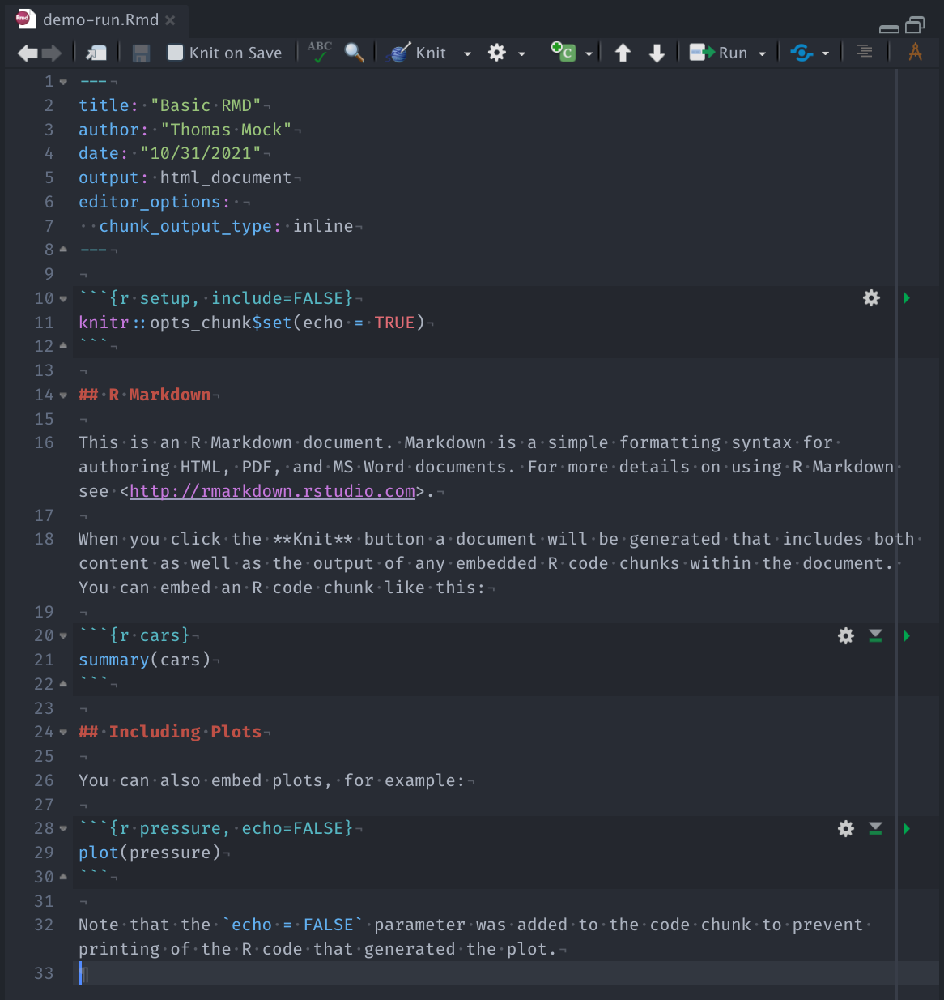
Anatomy of a RMarkdown in RStudio
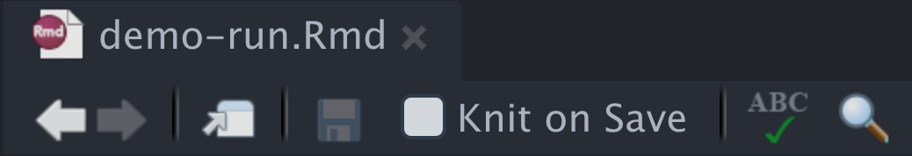
- Undo-redo buttons
- Open in it's own Source window
- Save
- Automatically Knit/Render on save
- Initiate spell checking
- Find or Find and Replace
Anatomy of a RMarkdown in RStudio
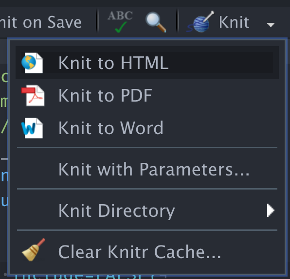
Anatomy of a RMarkdown in RStudio
- Knit to specific defaults (HTML, PDF, Word)
- Knit with parameters
- Knit directory controls
- Clear knit cache (ie clear the outputs)
Anatomy of a RMarkdown in RStudio
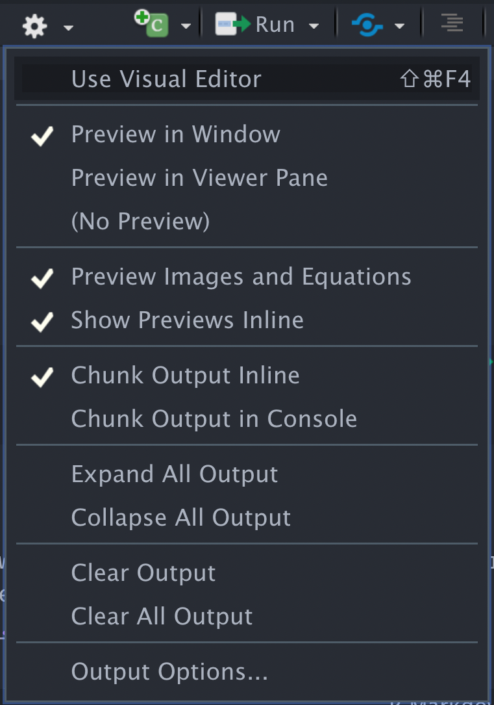
Anatomy of a RMarkdown in RStudio
- Use Visual Editor Mode
- Preview plots inline (ie Window) or in the RStudio Plot/Viewer pane
- Preview outputs
- Chunk output to R console or inline in notebook
- Expand output/collapse output
- Clear output for that chunk or globally
- Output options
Anatomy of a RMarkdown in RStudio
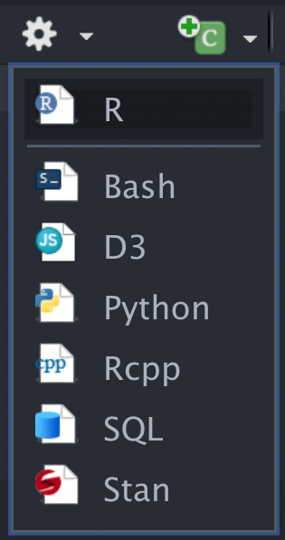
- Insert specific languages (ie R, Bash, D3, Python, Rcpp, SQL, Stan)
Anatomy of a RMarkdown in RStudio
- Insert specific languages (ie R, Bash, D3, Python, Rcpp, SQL, Stan)
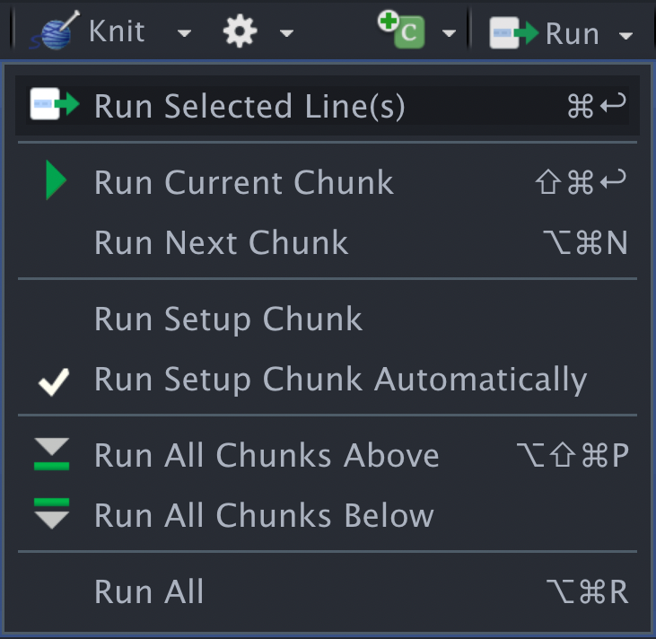
- Run highlighted Line(s)
- Run Current or Next Chunk
- Select whether named
Setupchunk should be run or automatically run - Run all Chunks
Anatomy of a RMarkdown in RStudio
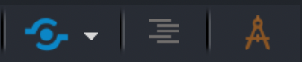
- Publish the document to RStudio Connect or RPubs.com
- Open/Close the Document Outline
- Toggle the Visual Editor mode
Take-aways
- ✔️ Document your document: use YAML to set up meaningful metadata
- ✔️ Style your document: use YAML to add options to your chosen output format
- ✔️ Organize your text: use markdown headers with
# - ✔️ Organize your code: use
knitrchunk labels - ✔️ Style your text: use markdown bold, italics,
-bullets, and1.lists - ✔️ Style your output: use
knitrchunk options
🧶 early, 🧶 often
Graphics

ggplot2
Some data
mockdata_all <- read_csv(here::here("data/mockdata.csv")) %>% mutate_at(vars(starts_with("ae_")), ~as.factor(.)) %>% mutate(fu_fct = fct_recode(as.factor(fu_stat), "Lived" = "1", "Died" = "2"))## Rows: 1499 Columns: 25## ── Column specification ────────────────────────────────────────────────────────## Delimiter: ","## chr (10): arm, sex, race, age_ord, site, country, ethnicity, name, first_nam...## dbl (15): case, age, fu_time, fu_stat, ps, hgb, bmi, alk_phos, ast, mdqualit...## ## ℹ Use `spec()` to retrieve the full column specification for this data.## ℹ Specify the column types or set `show_col_types = FALSE` to quiet this message.mockdata <- mockdata_all %>% filter(!site == "Nur-Sultan")Generate plots
surv_days_plot <- ggplot(mockdata) + aes(x = fu_time, y=arm, fill = fu_fct, group = interaction(arm, fu_fct)) + ggridges::geom_density_ridges() + labs(x= "Survival Time in Days (Censored)", y= "Study Arm") + scale_fill_manual( values = c("lightgrey", "#5C5CFF"), breaks = c("Died", "Lived"), name = "Follow-up status:") + theme_minimal() + theme(legend.position = "top")surv_days_plotGenerate plots
surv_days_plot <- ggplot(mockdata) + aes(x = fu_time, y=arm, fill = fu_fct, group = interaction(arm, fu_fct)) + ggridges::geom_density_ridges() + labs(x= "Survival Time in Days (Censored)", y= "Study Arm") + scale_fill_manual( values = c("lightgrey", "#5C5CFF"), breaks = c("Died", "Lived"), name = "Follow-up status:") + theme_minimal() + theme(legend.position = "top")surv_days_plotOne plot, served many ways
## Picking joint bandwidth of 147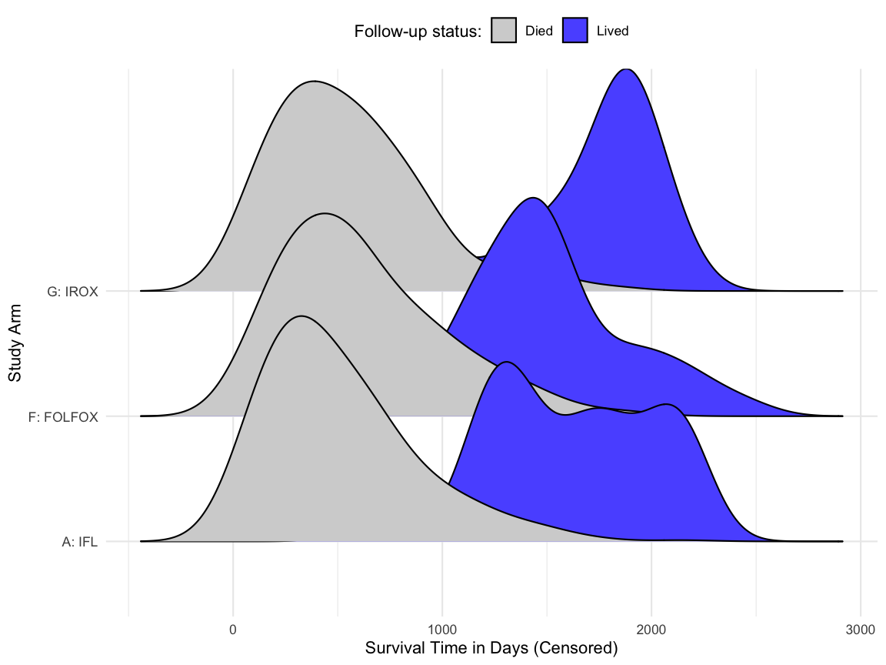
Control plots
figure resolution
- "quality" of the plot
- defaults to 72/96 depending on format
- DPI increases can improve the "quality", but also increase file size
figure size
- The height, width
- Controllable in several ways
figure captions and alt text
- Captions are printed captions for the document
- Alt text are embedded, used by screen readers for visually impaired
Control plots
figure resolution
- "quality" of the plot
- defaults to 72/96 depending on format
- DPI increases can improve the "quality", but also increase file size
figure size
- The height, width
- Controllable in several ways
figure captions and alt text
- Captions are printed captions for the document
- Alt text are embedded, used by screen readers for visually impaired
Figure resolution
{r, dpi = 72, fig.width = 5}
## Picking joint bandwidth of 147Figure resolution
{r, dpi = 72, fig.width = 5}
## Picking joint bandwidth of 147{r, dpi = 300, fig.width = 5}
## Picking joint bandwidth of 147Figure resolution
{r, dpi = 72, fig.width = 4}
## Picking joint bandwidth of 147Figure resolution
{r, dpi = 72, fig.width = 4}
## Picking joint bandwidth of 147{r, fig.retina=3, fig.width=4}
## Picking joint bandwidth of 147Figure size
{r, fig.retina=2, fig.dim = c(5,3)}
## Picking joint bandwidth of 147Figure size
{r, fig.retina=2, fig.dim = c(5,3)}
## Picking joint bandwidth of 147{r, fig.retina=2, fig.width=4}
## Picking joint bandwidth of 147Figure size
{r, fig.retina=2, fig.dim=c(4,6)}
## Picking joint bandwidth of 147Figure size
{r, fig.retina=2, fig.dim=c(8,6)}
## Picking joint bandwidth of 147Arrange plots
The goal of
patchworkis to make it ridiculously simple to combine separate ggplots.
library(patchwork)p1 <- ggplot(mtcars) + geom_point(aes(mpg, disp))p2 <- ggplot(mtcars) + geom_boxplot(aes(gear, disp, group = gear))p1 + p2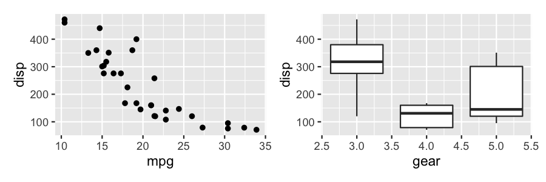
One plot, two plot
age_histogram <- ggplot(mockdata, aes(age)) + geom_histogram(color = 'white', fill = "#5C5CFF", bins = 20) + labs(x = "Age", y = "Count") + scale_y_continuous( breaks = scales::pretty_breaks()) + theme_minimal() + geom_hline(yintercept = 0)One plot, two plot
age_histogram <- ggplot(mockdata, aes(age)) + geom_histogram(color = 'white', fill = "#5C5CFF", bins = 20) + labs(x = "Age", y = "Count") + scale_y_continuous( breaks = scales::pretty_breaks()) + theme_minimal() + geom_hline(yintercept = 0)age_histogram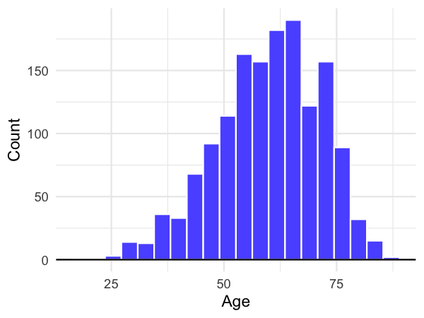
One plot, two plot
# using fig.dim=c(8,4), fig.retina=2surv_days_plot + age_histogram## Picking joint bandwidth of 147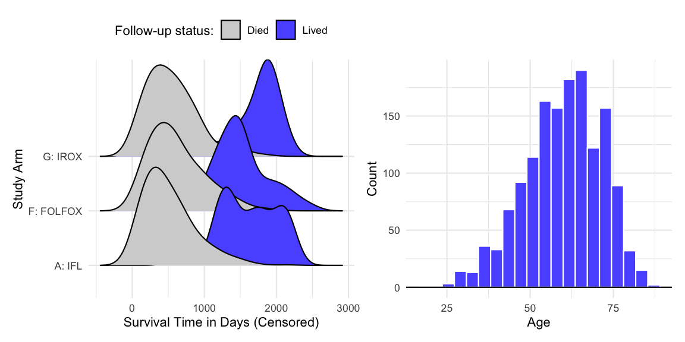
Labeled subplots
# using fig.dim=c(8,4), fig.retina=1surv_days_plot + age_histogram + plot_annotation(tag_levels = "A") # can set the tagging## Picking joint bandwidth of 147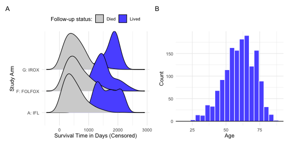
Labeled subplots
# using fig.dim=c(8,4), fig.retina=1surv_days_plot + age_histogram + plot_annotation(tag_levels = "1") # can alter the tagging## Picking joint bandwidth of 147Saving plots
fig.path - an alternative to calling ggsave() over and over!
Saving plots
fig.path - an alternative to calling ggsave() over and over!
A global setup chunk
```{r setup, include = FALSE}knitr::opts_chunk$set( warning = FALSE, message = FALSE, echo = FALSE, fig.retina = 2, fig.width = 6, fig.path = here::here("tom-figs/"))```A global setup chunk
```{r setup, include = FALSE}knitr::opts_chunk$set( warning = FALSE, message = FALSE, echo = FALSE, fig.retina = 2, fig.width = 6, fig.path = here::here("tom-figs/"))```- No messages/warnings in my final report
- No code returning, unless I explicitly override
- High quality figures of a decent width
- Save my figures out to a specific directory
A global setup chunk
```{r setup, include = FALSE}knitr::opts_chunk$set( warning = FALSE, message = FALSE, echo = FALSE, fig.retina = 2, fig.width = 6, fig.path = here::here("tom-figs/"))```- No messages/warnings in my final report
- No code returning, unless I explicitly override
- High quality figures of a decent width
- Save my figures out to a specific directory
You should experiment with your "defaults" so that you have to minimally change the individual chunks.
Tables
Tables
Given the duration of this workshop, a deep dive on tables is out of scope. In short, depending on the output (HTML, PDF, Office) you'll likely lean on specific packages. You can always output tables as an image (ie .png) and embed like you would a plot, but note that you lose the accessible benefit of a table in that case.
Tables
Given the duration of this workshop, a deep dive on tables is out of scope. In short, depending on the output (HTML, PDF, Office) you'll likely lean on specific packages. You can always output tables as an image (ie .png) and embed like you would a plot, but note that you lose the accessible benefit of a table in that case.
Great R packages for tables:
gt: Aiming to be agrammar of tables, asggplot2is an implemementation of thegrammar of graphics.gtsummary: a great package for quickly summarizing data or common statistical outputs.flextable: flexible package for output, especially powerful in that it can output tables to Word/Powerpoint.gtExtras: my own package, primarily for embedding many data visualizations intogttables.kableExtra: very stable and easy to use package for quickly creating tables in HTML/LaTeX (ie PDF).bstfun: A miscellaneous collection of functions to used by members of the Biostatistics Department at MSKCC
gtsummary
I am a huge fan of gtsummary and gt. gtsummary is especially powerful as it combines common tasks with rich support for outputs (Word, PDF, HTML). It is a wrapper around several packages with many additional capabilities built in.
gtsummary
I am a huge fan of gtsummary and gt. gtsummary is especially powerful as it combines common tasks with rich support for outputs (Word, PDF, HTML). It is a wrapper around several packages with many additional capabilities built in.
library(gtsummary)library(tidyverse)library(survival)Examples
select(trial, trt, age, grade, response) %>% tbl_summary(by = trt)Examples
select(trial, trt, age, grade, response) %>% tbl_summary(by = trt)| Characteristic | Drug A, N = 981 | Drug B, N = 1021 |
|---|---|---|
| Age | 46 (37, 59) | 48 (39, 56) |
| Unknown | 7 | 4 |
| Grade | ||
| I | 35 (36%) | 33 (32%) |
| II | 32 (33%) | 36 (35%) |
| III | 31 (32%) | 33 (32%) |
| Tumor Response | 28 (29%) | 33 (34%) |
| Unknown | 3 | 4 |
| 1 Median (IQR); n (%) | ||
bstfun adds some fun!
My own package gtExtras can be used natively with gt, and Daniel has wrapped it to be supported in gtsummary!
library(gtsummary)select(trial, age, marker) %>% tbl_summary(missing = "no") %>% bstfun::add_sparkline() # brought in from gtExtras| Characteristic | N = 2001 | Histogram |
|---|---|---|
| Age | 47 (38, 57) | |
| Marker Level (ng/mL) | 0.64 (0.22, 1.39) | |
| 1 Median (IQR) | ||
Examples
t1 <- glm(response ~ trt + grade + age, trial, family = binomial) %>% tbl_regression(exponentiate = TRUE)# time to death Cox modelt2 <- coxph(Surv(ttdeath, death) ~ trt + grade + age, trial) %>% tbl_regression(exponentiate = TRUE)# printing merged tablecombo_tab <- tbl_merge( tbls = list(t1, t2), tab_spanner = c("**Tumor Response**", "**Time to Death**"))-
| Characteristic | Tumor Response | Time to Death | ||||
|---|---|---|---|---|---|---|
| OR1 | 95% CI1 | p-value | HR1 | 95% CI1 | p-value | |
| Chemotherapy Treatment | ||||||
| Drug A | — | — | — | — | ||
| Drug B | 1.13 | 0.60, 2.13 | 0.7 | 1.30 | 0.88, 1.92 | 0.2 |
| Grade | ||||||
| I | — | — | — | — | ||
| II | 0.85 | 0.39, 1.85 | 0.7 | 1.21 | 0.73, 1.99 | 0.5 |
| III | 1.01 | 0.47, 2.15 | >0.9 | 1.79 | 1.12, 2.86 | 0.014 |
| Age | 1.02 | 1.00, 1.04 | 0.10 | 1.01 | 0.99, 1.02 | 0.3 |
| 1 OR = Odds Ratio, CI = Confidence Interval, HR = Hazard Ratio | ||||||
Meta RMarkdown
Using RMarkdown parameters
---title: Visualizing the Ocean Flooroutput: html_documentparams: state: "hawaii"---Using RMarkdown parameters
---title: Visualizing the Ocean Flooroutput: html_documentparams: state: "hawaii"---You can reference parameters inline, ie r params$data which returns "hawaii" as the result.
Or, can be used in normal chunks:
ocean_data %>% filter(state == params$state) %>% autoplot()Using RMarkdown parameters
---title: My Documentoutput: html_documentparams: days: label: "Number of Previous Days" value: 90 input: slider min: 30 max: 360 region: label: "Region:" value: Europe input: select choices: [North America, Europe, Asia, Africa]---Using RMarkdown parameters
---title: My Documentoutput: html_documentparams: days: label: "Number of Previous Days" value: 90 input: slider min: 30 max: 360 region: label: "Region:" value: Europe input: select choices: [North America, Europe, Asia, Africa]---Can also create shiny "modals" inside RStudio, via knit with parameters
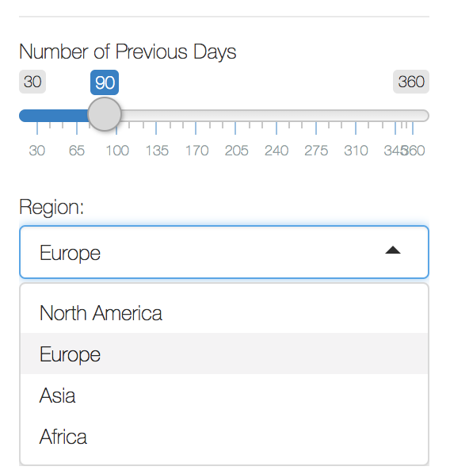
More details on parameters and workflow
Formats
Many RMarkdown Formats
| Documents | |
| Notebook | Interactive R Notebooks |
| HTML | HTML document w/ Bootstrap CSS |
| PDF document (via LaTeX template) | |
| Word | Microsoft Word document (docx) |
| ODT | OpenDocument Text document |
| RTF | Rich Text Format document |
| Markdown | Markdown document (various flavors) |
| Presentations | |
| ioslides | HTML presentation with ioslides |
| reveal.js | HTML presentation with reveal.js |
| Slidy | HTML presentation with W3C Slidy |
| Beamer | PDF presentation with LaTeX Beamer |
| PowerPoint | PowerPoint presentation |
Many RMarkdown Formats
| Documents | |
| Notebook | Interactive R Notebooks |
| HTML | HTML document w/ Bootstrap CSS |
| PDF document (via LaTeX template) | |
| Word | Microsoft Word document (docx) |
| ODT | OpenDocument Text document |
| RTF | Rich Text Format document |
| Markdown | Markdown document (various flavors) |
| Presentations | |
| ioslides | HTML presentation with ioslides |
| reveal.js | HTML presentation with reveal.js |
| Slidy | HTML presentation with W3C Slidy |
| Beamer | PDF presentation with LaTeX Beamer |
| PowerPoint | PowerPoint presentation |
| Journals | |
| distill | Scientific and technical writing for the web |
| jss_article | Journal of Statistical Software (JSS) |
| acm_article | Association for Computing Machinery (ACM) |
| acs_article | American Chemical Society (ACS) Journal |
| ctex | Documents based on the LaTeX package ctex |
| elsevier_article | Submissions to Elsevier journals |
| More | |
| flexdashboard | Interactive dashboards |
| bookdown | HTML, PDF, ePub, and Kindle books |
| Websites | Multi-page websites |
| blogdown | Customizable websites and blogs |
| pkgdown | Package documentation websites |
| Tufte Handout | Handouts in the style of Edward Tufte |
| Package Vignette | R package vignette (HTML) |
| Github Document | GitHub Flavored Markdown document. |
Remember, it's all just code!
The different outputs are used for their specific purposes, but remember that the way of writing, adding code, etc is shared across them all!
Remember, it's all just code!
The different outputs are used for their specific purposes, but remember that the way of writing, adding code, etc is shared across them all!
Learn RMarkdown and R, and you can use your code to generate:
- Plots
- Tables
- Text
- Reports
- Presentations
- Websites
- Books
- Whatever you can think of!
html_document
The "workhorse" of RMarkdown, this is the default format. Amazing amount of power in HTML and has the richest feature set.
html_document
The "workhorse" of RMarkdown, this is the default format. Amazing amount of power in HTML and has the richest feature set.
pdf_document
Useful when you prefer LaTeX instead of HTML, or if you need PDF as an output.
Office compliance
The Office standards, but created programatically with R and RMarkdown!
Office compliance
The Office standards, but created programatically with R and RMarkdown!
word_document
powerpoint
xaringan
Exceptionally powerful/beautiful presentations created with RMarkdown.
distill
My personal favorite format, scientific writing native to the web!
Distill for R Markdown is a web publishing format optimized for scientific and technical communication. Distill articles include:
- Reader-friendly typography that adapts well to mobile devices.
- Features essential to technical writing like LaTeX math, citations, and footnotes.
- Flexible figure layout options (e.g. displaying figures at a larger width than the article text).
- Attractively rendered tables with optional support for pagination.
- Support for a wide variety of diagramming tools for illustrating concepts.
- The ability to incorporate JavaScript and D3-based interactive visualizations.
- A variety of ways to publish articles, including support for publishing sets of articles as a Distill website or as a Distill blog.
bookdown
Write entire books in RMarkdown! The RMarkdown book itself was written this way.